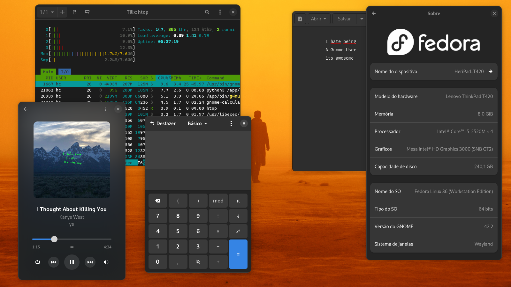
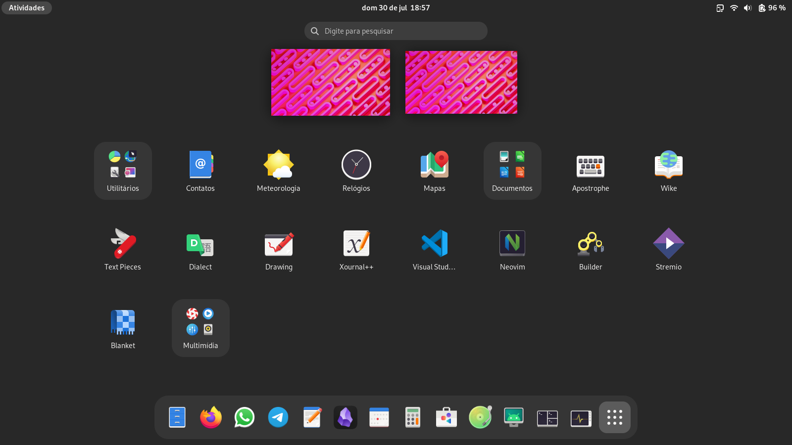
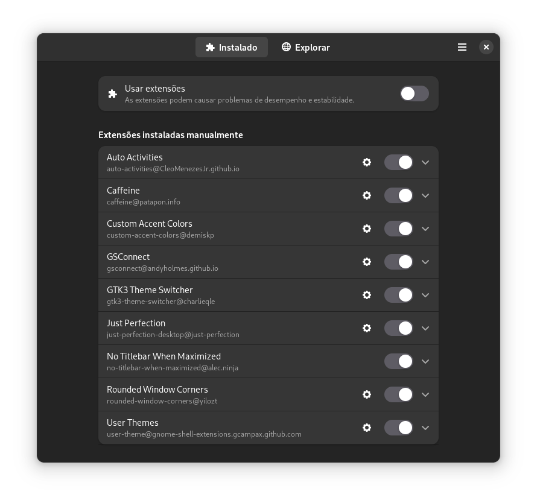
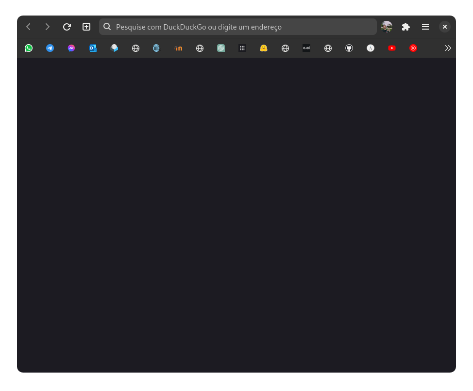
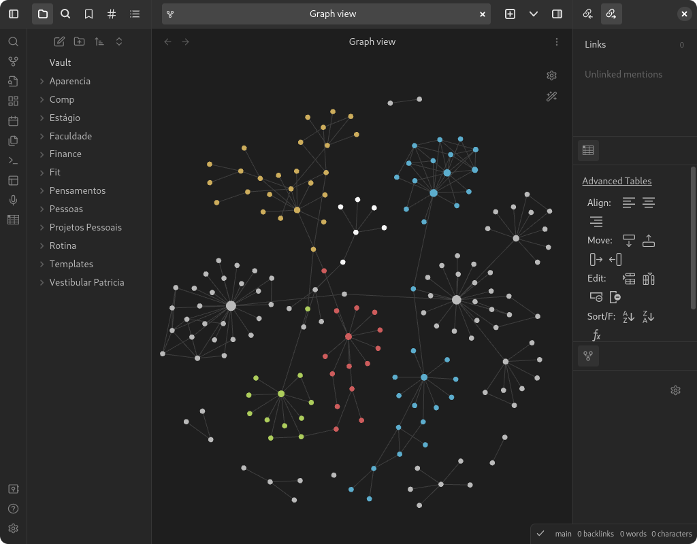
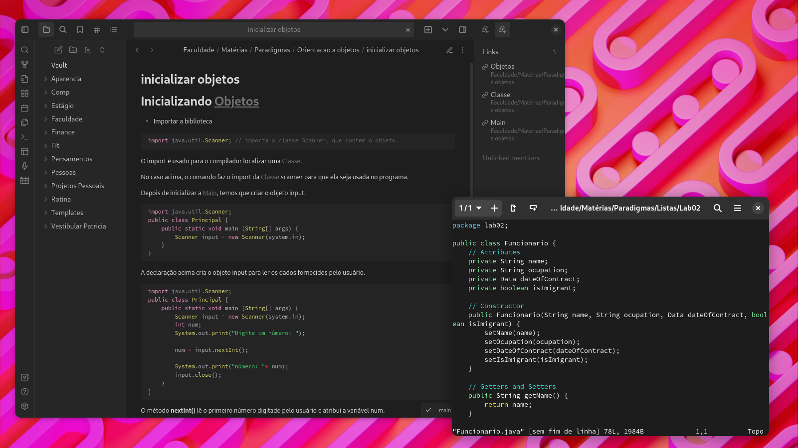

My Sane GNOME Setup
28/09/2025
In this post i will try to explain my setup and ramble about gnome devs and this DE
The Idea:
Just a Screen. Simple as that.

I call all my programs through shortcuts. I use the overview sometimes to switch workspaces or to see the time/date, I think it works pretty great.
Themes
I just use the normal adwaita theme. To be honest I kinda like the old one more, with all the depth and that kinda-like skeuomorphic design. It was “modern” but not taste-less like GTK4.
To make everthing consistent i installed Adw-GTK3, it makes the GTK3 programs look like GTK4 ones.
Icons
I gave up trying to customize stuff, i just use MoreWaita now, i think it looks cute.

Extensions

This is kinda useless, but i like it. it opens the overview when there is no programs open.
I use this to disable the screensaver when i am doing something where i don’t touch the mouse for a long time. It also disables the screensaver when i am in fullscreen.
I don’t like much color, so i made everything gray.
This is incredible, it works so well. I can have notifications, sync the clipboard, mute the computer when i get a call, control the music, send files and etc. I use it with KDEConnect on my phone.
So when the night-theme kicks in, the GTK3 programs also change to the dark theme.
This has everthing, i use to only show the top bar in the overview, make the dock slighly smaller and some other stuff.
I use shortcuts to close, minimize and maximize programs, the titlebar is useless in programs like vscode.
So that every window looks cute.
Extras
Firefox Gnome Theme
There is a theme for firefox that makes it look like Gnome Web, it’s called Firefox Gnome Theme, it also hides the tabs when there is only one open.

Good Firefox Extensions
i will throw some firefox extensions so that the feds can fingerprint me.
- Imagus
- Firefox Relay
- Firefox Multi-Account Containers
- ClearURLs
- skip redirect
- uBlock Origin
- SponsorBlock
- DeArrow
Obsidian Adwaita Theme
I use Obsidian for most of my stuff, there is This theme for it, i also have a public Vault where i index Kanye West Music lyrics, you can check it Here


Keybindings
When i started using LARBS i got used to these keybindings, so i use them in every distro i use.
| Action | Keybinding |
|---|---|
| Open Terminal | Super + Enter |
| Open Browser | Super + W |
| Open File Manager | Super + R |
| Open Music Player | Super + M |
| Open Calculator | Super + C |
| Open Settings | Alt + F1 |
| Lock Screen | Super + X |
| Screenshot | PrtSc |
| Logout | Super + Esc |
| Close Window | Super + Q |
| Toggle Window State | Super + Space |
| Left Workspace | Super + D |
| Right Workspace | Super + A |
| Move Window to Left Workspace | Super + Shift + D |
| Move Window to Right Workspace | Super + Shift + A |
| Move to Workspace [Number] | Super + [Number] |
| Move Window to Workspace [Number] | Super + Shift + [Number] |
Final Thoughts
I am happy with my setup. I Hate gnome so much you have no idea, but I guess I got used to it? I like the overview and a bit of the design. I tried KDE for about 20 minutes and gave up. Maybe someday I will be happy with a riced i3 setup again but i don’t want to configure it.

